Steward
分享是一種喜悅、更是一種幸福
掌機 - GPD Win 上蓋鋁合金版 - 逆向按鍵更新程式(HJM1954M Updater)
由於目前GPD Win的按鍵配置(滑鼠模式)是把DPad設定成WASD對應鍵；而4顆按鍵則是上下左右對應鍵，司徒使用後，還是比較習慣使用Pandora掌機的設定，因此，司徒嘗試找尋是否有相關配置可以更改，結果當然是沒用，最後只好嘗試逆向GPD Win提供的按鍵更新程式，看看是否可以Patch掉更新的韌體程式，結果還是失敗收場，因為該按鍵更新程式除了Hardcode韌體程式之外，基本上只提供片段更新，看來應該只是提供參數更新的服務，最後司徒只能訓練自己適應並整理此篇逆向過程
解壓後的更新程式
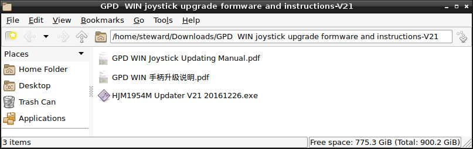
接著就是主程式開啟後的畫面，預設是無法更新韌體程式的，因為必須先讓硬體進入更新模式
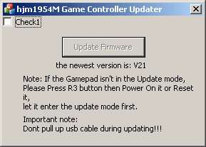
司徒使用ResourceHacker找出相對應的ID
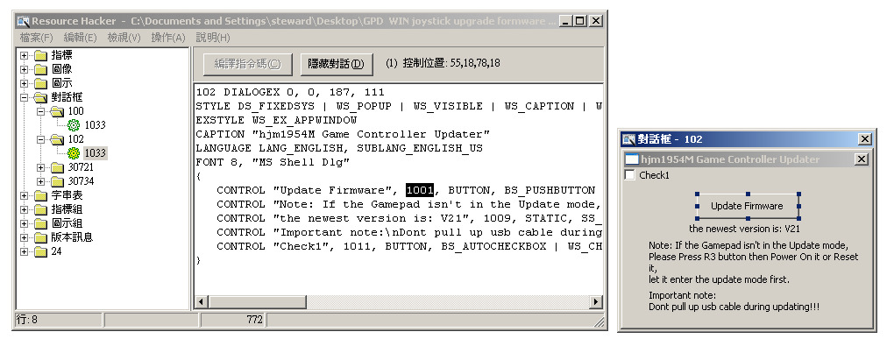
接著使用對應的ID，找出可能對應的副程式位置
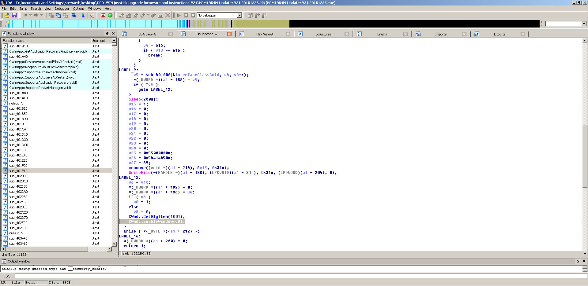
接著使用OllyDbg跟蹤就可以發現讓Update Firmware按鍵變成灰色的位置
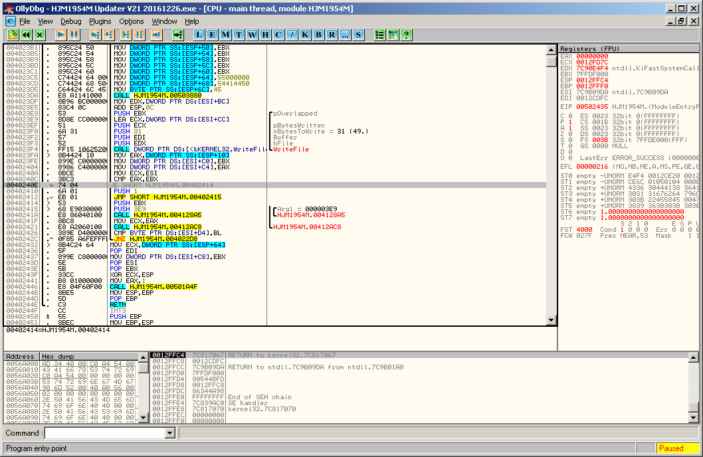
接著Patch掉該判斷指令並重新執行測試
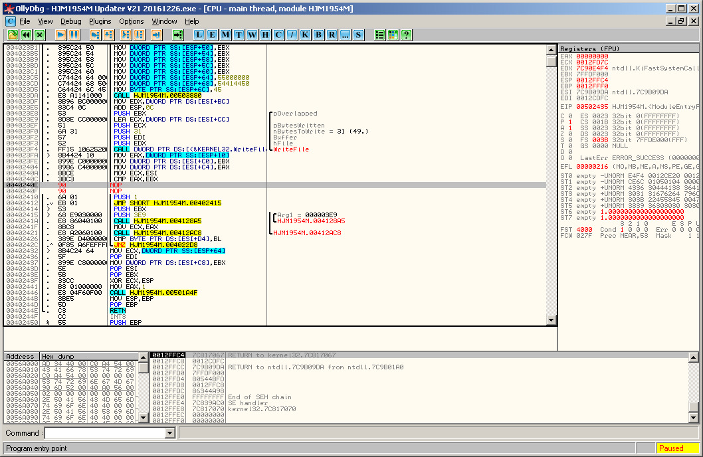
結果證明該位置無誤，Update Firmware的副程式就在剛剛Patch的附近
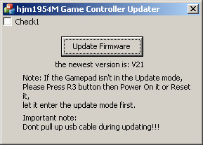
目前還沒進入更新模式，測試看看是否可以運行更新功能，當然結果一定是跳出錯誤訊息
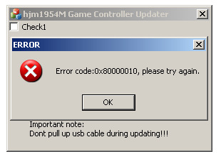
再度跟蹤可以發現Update Firmware會嘗試開啟USB HID裝置進行溝通，這也是為何司徒會遇到錯誤的原因
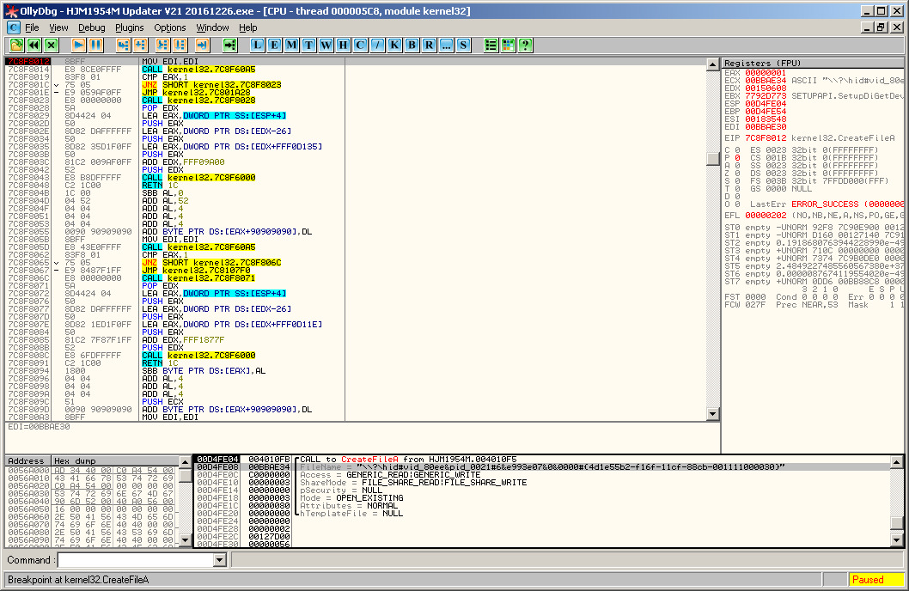
從OllyDbg發現的位置找到位於IDA Pro的副程式位置
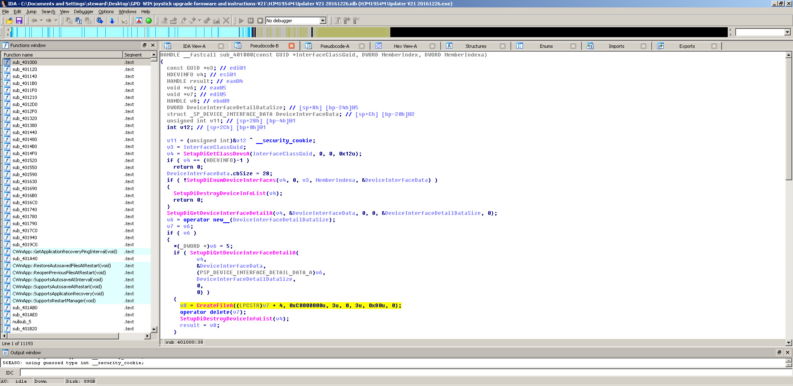
嘗試往回找到原始的位置(Update Firmware副程式)
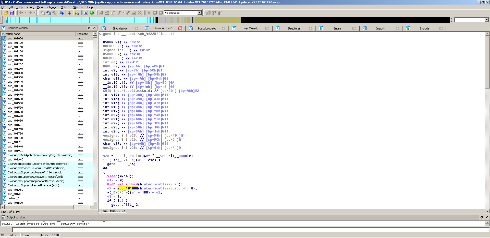
Main entry for Updating Firmware
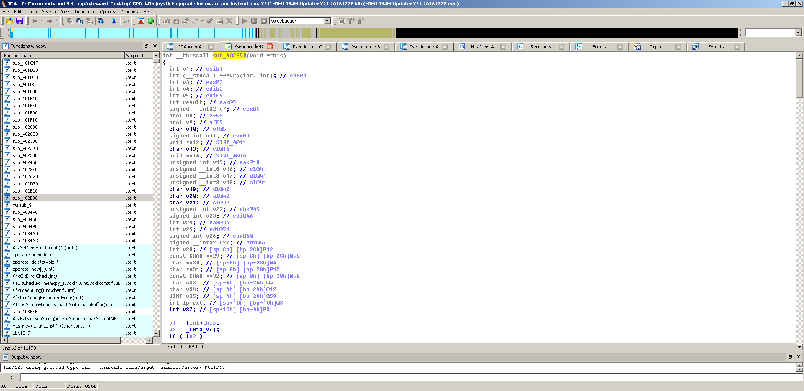
Hardcode
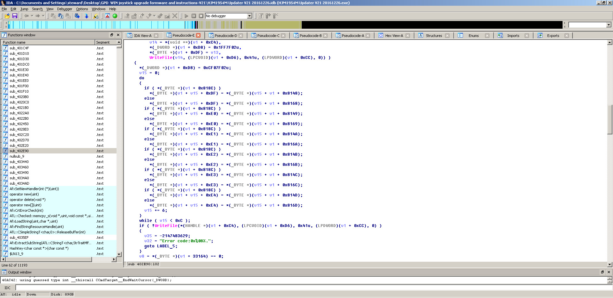